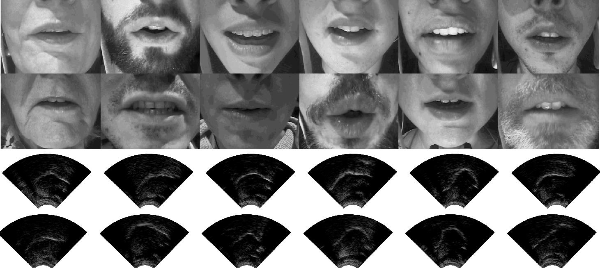

The Tongue and Lips Corpus
A multi-speaker corpus of ultrasound images of the tongue and video images of the lips
The Tongue and Lips (TaL) corpus is a multi-speaker corpus of ultrasound images of the tongue and video images of lips. This corpus contains synchronised imaging data of extraoral (lips) and intraoral (tongue) articulators from 82 native speakers of English.
For more information, please read the TaL corpus paper here!

Datasets
The TaL corpus consists of two datasets:
- TaL1 is a single-speaker dataset containing data of one professional voice talent, a male native speaker of English, over six recording sessions.
- TaL80 is a multi-speaker dataset contains recording sessions of 81 native speakers of English without voice talent experience. Each speaker was recording over a single recording session.
Speaker and session identifiers
In the TaL80 dataset, speaker identifiers denote speaker number, gender (m/f), and country of origin. Country identifiers are: (e)ngland, (s)cotland, (i)reland, (n)orthern-ireland, (o)ther. Examples: 01fi, 02fe, 03mn, 04me, ...
The TaL1 dataset only has 1 speaker, so there are no speaker identifiers. Instead, we have recording sessions, which are simply called day1, day2, day3, ...
File identifiers
For each speaker (TaL80) or session (TaL1), utterances are indexed according to their recording times. See the prompt text file for recording date/time. Each file ID also includes a tag indicating the prompt type.
| Prompt Tag | Description |
|---|---|
| swa | swallow |
| cal | calibration |
| aud | audible read speech |
| sil | silent speech |
| whi | whispered speech (TaL1 only) |
| spo | spontaneous speech utterance (unprompted speech) |
| xaud | shared audible read speech utterances |
| xsil | shared silent speech utterances |
| xwhi | shared whispered speech utterance (TaL1 only) |
Calibration prompts (cal) and swallows (swa) were read at the beginning and end of each recording session and before and after a short break.
The tag x denotes prompts that were shared across speakers (TaL80) or recording sessions (TaL1).
Examples: 001_swa, 002_cal, 004_xaud, 028_spo, 029_xsil, 038_sil, ...
Data types
Each utterance consists of five core data types, which can be identified by their file extension.
Core data types
| Data type | Extension | Description |
|---|---|---|
| prompt | .txt | text file with prompt and datetime of recording |
| waveform | .wav | speech waveform |
| synchronisation | .sync | audio synchronisation signal (waveform) |
| ultrasound | .ult, .param | raw ultrasound data (.ult) and ultrasound parameters (.param) |
| video | .mp4 | video images of the lips (synchronised to waveform) |
Example. The second utterance recorded by speaker 01fi is a calibration utterance with the identifier 002_cal. The five core data types for this utterance are the files: 002_cal.txt, 002_cal.wav, 002_cal.sync, 002_cal.ult, 002_cal.param, 002_cal.mp3.
Additional data
Because spontaneous speech utterances can be long in duration (up to 60 seconds), we manually annotated the boundaries of shorter time segments (typically 5-10 seconds). This annotation is available as a CSV file with start and end time in seconds of the short segments nd their respective transcription. This file is identified by the extension .lab.
Structure
TaL1 and TaL80 follow a similar structure, but they are independent datasets. For this reason, shared prompts are only marked within datasets (across speakers for TaL80 and sessions for TaL1). There is an overlap in the recorded prompts in the two datasets. Most prompts read in TaL1 were recorded by the first speakers in TaL80, but a small subset was read by all speakers. Users should be aware of this if using both datasets, particularly when designing training and test splits.
Directory structure for TaL1:
/TaL1
/samples
/core
/video
/core
/day2
/day3
...
/doc
Directory structure for TaL80:
/TaL80
/samples
/core
/video
/core
/01fi
/02fe
/03mn
...
/doc
The samples directory contains a subset of the larger dataset (2 samples per speaker/session). If you wish to have a quick look at the TaL corpus, you can download this directory first and browse some examples. The directory samples/core provides a subset of the core data types and the directory samples/video provides video samples generated with the tal-tools visualiser.
The doc directory contains the documentation for the data, as well as some additional documents, such as version number and anonymised participant information.
The core directory contains the core data for the dataset.
Video samples
In samples/video, there are a few video examples generated with the tal-tools visualiser. These sample videos are also available online:
Download
The datasets are quite large, so please make sure that you have enough disk space before attempting to download.
| Dataset | Size |
|---|---|
| /TaL1/core | 49GB |
| /TaL80/core | 498GB |
If you prefer to browse some samples before downloading the full data, you can download the samples directories.
| Dataset | Size |
|---|---|
| /TaL1/samples | 2.1GB |
| /TaL80/samples | 8.2GB |
To download the TaL corpus, please check the download instructions for the Ultrasuite repository. The instrutions are applicable to the TaL corpus, in case you prefer to download part of the data (an utterance, a specific data type, etc). However, note that we replace ultrasuite-rsync.inf.ed.ac.uk::ultrasuite with ultrasuite-rsync.inf.ed.ac.uk::tal-corpus.
Warning: the commands below will download 49GB and 498GB of data, respectively! Please make sure you have enough disk space. Check the download instructions for the Ultrasuite repository to download subsets of the data.
To download the TaL1 dataset, you can run:
rsync -av ultrasuite-rsync.inf.ed.ac.uk::tal-corpus/TaL1 .
Similarly, to download the TaL80 dataset, you can run:
rsync -av ultrasuite-rsync.inf.ed.ac.uk::tal-corpus/TaL80 .
Using the data
The video data released with the TaL corpus does not embed the audio. If you wish to see the video with the corresponding waveform, you can use ffmpeg with a command such as:
ffmpeg -i input.mp4 -i input.wav -c:v copy -map 0:v:0 -map 1:a:0 -c:a ac3 -b:a 192k output.mp4
If you wish to visualise the ultrasound, with or without audio, you can use Ultrasuite tools.
For more complex visualisations including video, ultrasound, and spectrogram/waveform, please have a tool at the TaL corpus visualiser.
If you're just interested in general input/output, one or more of these functions should provide some useful examples.
Synchronisation of data streams
The hardware synchronisation signal used during data collection is available in the TaL corpus. This is a waveform with the file extension .sync. Please check the page linked below for further details. This page might also be useful to understand the overall content of the data.
Regarding TaL1: The video synchronisation failed during the first recording session of the TaL1 data. The problem can be seen in the synchronisation signal, which merged the video and ultrasound signals. We chose to release this session, as it might still be useful for some applications that do not depend on video and audio synchronisation. This session is named day1_no_vid_sync. Check the link above for further details.
Additional Notes
TaL80 Notes
Please see the participant notes in TaL80/doc for anonymised detailed notes on all participants. We describe here two cases where image quality was not as good as we hoped.
- Speaker
17mshas a large amount of facial hair, which hides a large portion of the lips in the video. The ultrasound images of the tongue appear reasonable. - Speaker
60mshas a large amount of facial hair under the chin, which created some problems for the ultrasound probe. The video, however, appears reasonable.
Acknowledgements
Supported by the Carnegie Trust for the Universities of Scotland (Research Incentive Grant number 008585) and the EPSRC Healthcare Partnerships grant number EP/P02338X/1 (Ultrax2020). We thank the participants of this corpus for providing the consent that allows this data to be freely available to the research community.
References
If using data or code from the TaL corpus, please provide appropriate web links and cite the following paper:
- Ribeiro, M. S., Sanger, J., Zhang, J.-X., Eshky, A., Wrench, A., Richmond, K.,& Renals, S. (2021). TaL: a synchronised multi-speaker corpus of ultrasound tongue imaging, audio, and lip videos. Proceedings of the IEEE Workshop on Spoken Language Technology (SLT). Shenzhen, China. [paper]